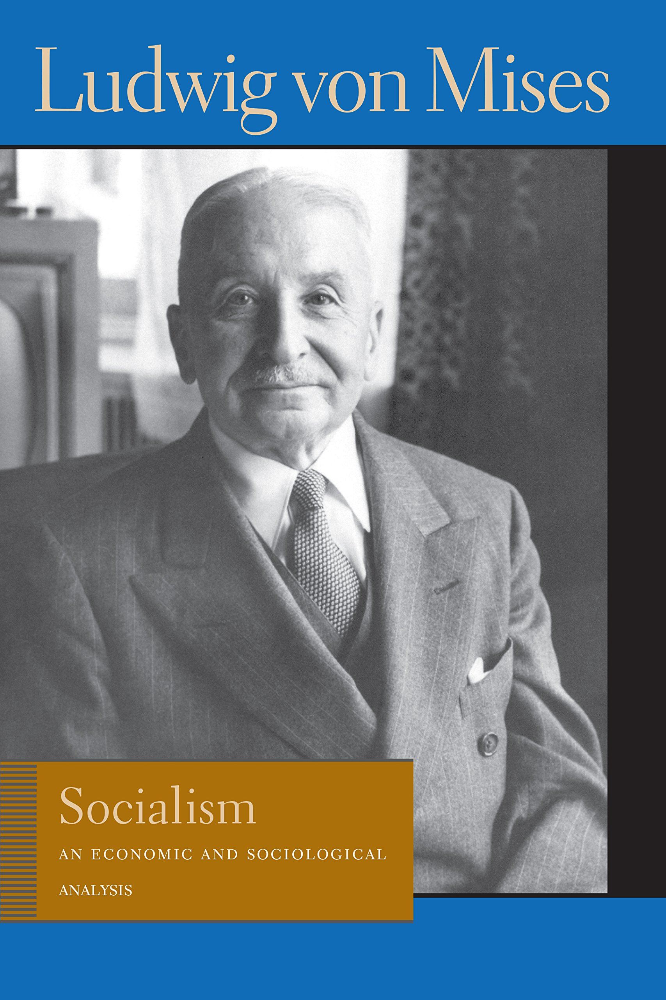

Olavo de Carvalho
Demonstra que a economia socialista é impossível.
Ver também
- Theory and History: An Interpretation of Social and Economic Evolution (https://mises.org/library/theory-and-history-interpretation-social-and-economic-evolution)
- Theory and History: An Interpretation of Social and Economic Evolution (https://oll.libertyfund.org/titles/mises-theory-and-history-an-interpretation-of-social-and-economic-evolution-lf-ed)
- (Audiobook) Theory and History: An Interpretation of Social and Economic Evolution (https://mises.org/library/theory-and-history-interpretation-social-and-economic-evolution-0)
- (Audiobook) Theory and History: An Interpretation of Social and Economic Evolution (https://www.youtube.com/view_play_list?p=E52EEC7BFA3115F0)
-
-
-
-
-
-
-
-
- Mises Seminar - Why Historians have failed to recognize Mises’ “Theory and History” (https://www.youtube.com/watch?v=4nKhOpmDA0g)
-
"This new volume by Professor von Mises has the same texture and tone as his earlier books on Human Action and Socialism. There are frequent crossreferences, and both the methods of argument and the conclusions are perfectly consistent. The defence of the liberal market economy and of economics and 'praxeology' as wertfrei intellectual studies with 'unique epistemological character' will be familiar to all his readers. The defence, of course, is most frequently a scathing attack. Never can the market economy have been handled so stridently or the history of ideas so brusquely."
(Book Review) Theory and History by Ludwig von Mises (https://www.jstor.org/stable/2227673) - (Book Review) Theory and History by Ludwig von Mises (https://academic.oup.com/ajj/article-abstract/3/1/201/101898)
- (Book Review) Theory and History by Ludwig von Mises (https://academic.oup.com/ia/article-abstract/34/4/522/2699720)
- (Book Review) Theory and History by Ludwig von Mises (https://www.jstor.org/stable/2608014)
- (Book Review) Theory and History by Ludwig von Mises (https://www.jstor.org/stable/40098536)
- (Book Review) Theory and History by Ludwig von Mises (https://www.jstor.org/stable/41208398)
Mais livros

Ludwig von Mises

Study Guide to Human Action: A Treatise on Economics
Robert P. Murphy

Ludwig Von Mises